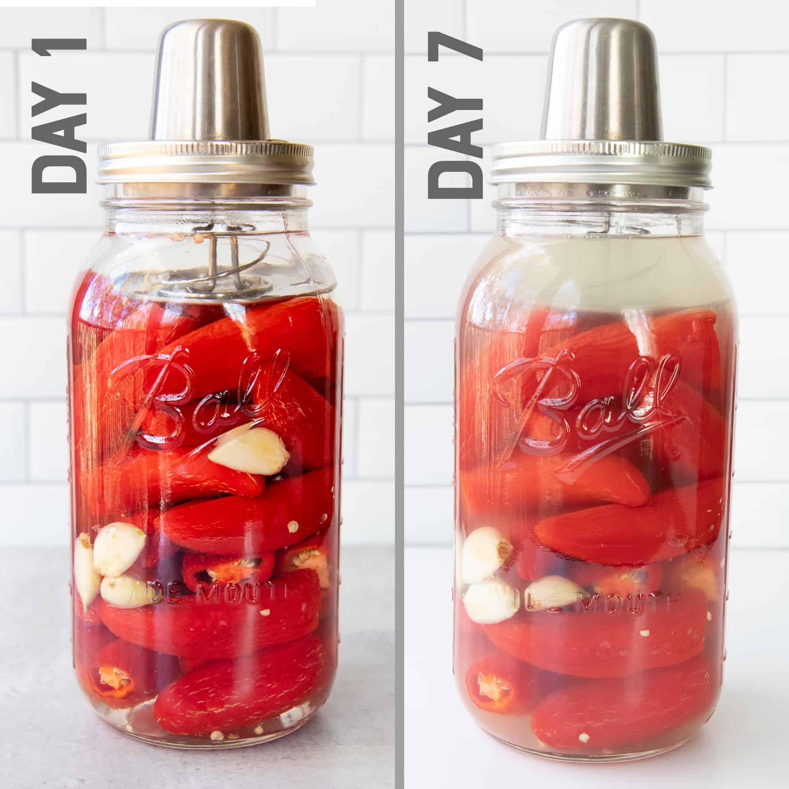

Garlic and Anchiote Fermented Hot Sauce

Recipe Source
"Fermented hot sauce is a spicy, slightly acidic sauce made by fermenting hot chilis and other ingredients together in a jar or crock. Over time, flavor will deepen, growing more and more complex and more acidic as beneficial bacteria go to work. When it's sour enough, and you like the flavor, you'll blend the ingredients together with brine or vinegar. Some recipes call for straining which produces a thin sauce, while others do not and produce a thicker sauce."- Nourished Kitchen
Adding olive oil to this hot sauce recipe from Dan Kluger of Loring Place in NYC lends it body and mellows some of the heat.
Ingredients
Makes about 2 and 3/4 cups
- 2 garlic cloves
- 1 pound fresh red chiles(such as cayenne, Fresno, or Holland), couresely chopped
- 3 tablespoons kosher salt
- 3 tablespoons sugar
- 1 cup olive oil
- 3 tablespoons achiote(annatto) seeds
- 2 teaspoons smoked paprika
- 3/4 cup distilled vinegar
SPECIAL EQUIPMENT
A 1-pint glass jar; a layer of cheesecloth
INGREDIENT INFO
Achiote seeds can be found in specialty stores, in the spice section of some supermarkets, and online.
Steps
- Pulse garlic in a food processor until finely chopped. Add chiles, salt, and sugar and pulse until chile pieces are no bigger than ½". Transfer mixture to jar and press down so chiles are slightly submerged in their own liquid. Cover with cheesecloth and fasten with kitchen twine or a rubber band. Let sit in a cool place away from direct sunlight at least 2 days and up to 5 days. The liquid will develop a slightly sour smell and there should be small bubbles scattered throughout. The longer you let it ferment, the more active it will become, but don’t go longer than 5 days.
- Heat oil, achiote seeds, and paprika in a small saucepan over medium-high. As soon as small bubbles appear around the edges of the pan (2–3 minutes), let cook another 30 seconds; let cool. Strain oil through a fine-mesh sieve into a heatproof bowl; discard solids.
- Blend achiote oil, vinegar, and two-thirds of chile mixture in a blender until smooth. Transfer to an airtight container and stir in remaining chile mixture.
- Do Ahead: Hot sauce can be made 2 weeks ahead; cover and chill.